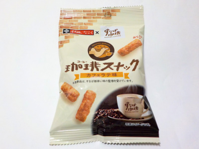

秋田いなふく×すなば珈琲の珈琲スナック-カフェラテ味-
2024/01/27

内容量が30グラムの小さな商品です。
すなば珈琲がよくわからないので、忠実に再現されているのかは分かりません。
香ばしくて甘いサクサクしたピーナッツ揚げだと思いました。カフェラテと言われればカフェラテ味だと感じますが、何か新しい美味しさだと思いました。
ビーナッツ揚げは味を変えても美味しいですね。ご当地ピーナッツ揚げが各地にあればいいのにな。
秋田県秋田市川尻町字大川反170
2024/01/27

内容量が30グラムの小さな商品です。
すなば珈琲がよくわからないので、忠実に再現されているのかは分かりません。
香ばしくて甘いサクサクしたピーナッツ揚げだと思いました。カフェラテと言われればカフェラテ味だと感じますが、何か新しい美味しさだと思いました。
ビーナッツ揚げは味を変えても美味しいですね。ご当地ピーナッツ揚げが各地にあればいいのにな。